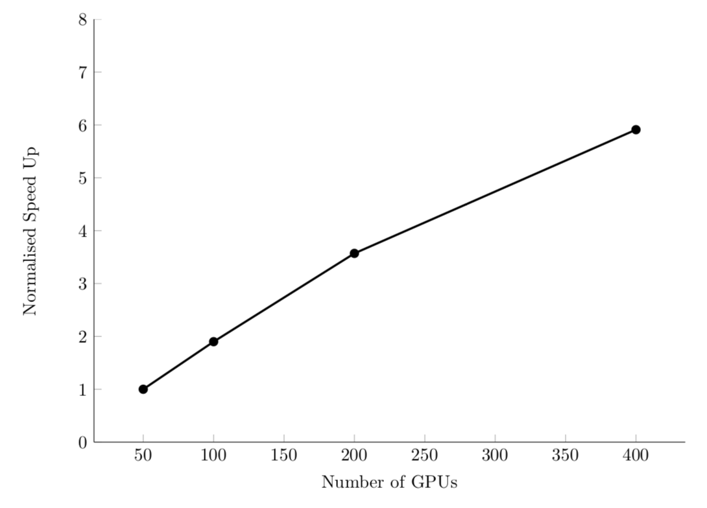
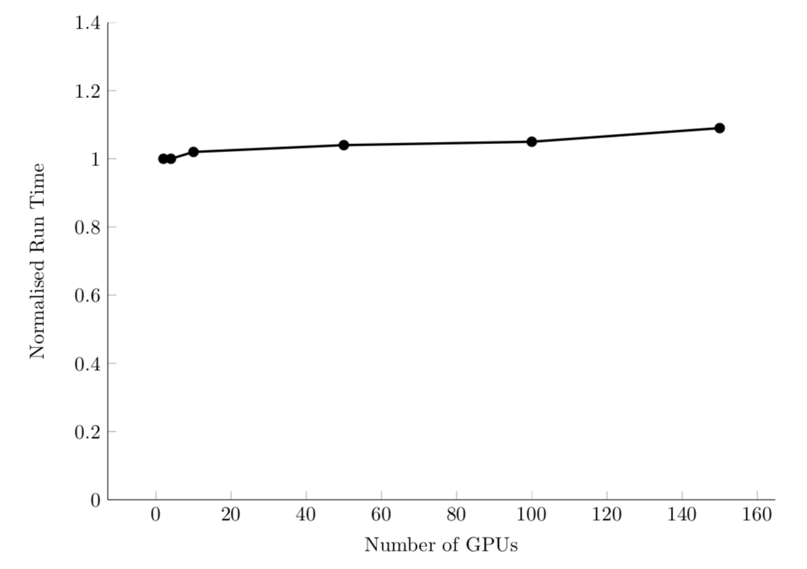

If you want more, check out CS 475/575 Parallel Programming.
Computer: perform many simultaneous tasks
Developer: determine dependencies between code and data
Up until now: serial thinking, like "x then y then z"
Benefit of parallelism: problems execute faster—sometimes much faster.
Downside to parallelism: harder to program, debug, open files, print to screen.
First: wait until your code works and you need it.
Scale: size of problem
Scale is proportional to number of processes P used,
and thus the maximum degree of parallelism possible.
FLOPS: number of floating-point operations per second
Scale up slowly—start with one processor, then 10, 100, etc.
scalability: how easy or hard it is to scale code
strong scaling: how runtime changes as a function of processor number for a fixed total problem size
speedup \(s\): ratio of time on one processor, \(t_1\), to time on \(P\) processors, \(t_P\):
Efficient system: linear strong scaling speedup. For example, PyFR CFD code:
weak scaling: how runtime changes as a function of processor number for a fixed problem size per processor
sizeup \(z\), for a problem size \(N\):
Efficient system: linear sizeup. Or, constant time with additional processors/problem size. For example, PyFR CFD code:
Some fraction of an algorithm, \(\alpha\), cannot be parallelized. Then, the maximum speedup/sizeup for \(P\) processors is:
Then, the theoretically max speedup is:
embarassingly parallel: algorithms with a high degree of independence and little communication between parts
Examples: summing large arrays, matrix multiplication, Monte Carlo simulations, some optimization approaches (e.g., stochastic and genetic algorithms)
Other algorithms have unavoidable bottlenecks: inverting a matrix, ODE integration, etc.
Not all hope is lost! Some parts may still benefit from parallelization.
generalization of the classic 2-body problem that governs the equations of motion for two masses. From Newton's law of gravity: